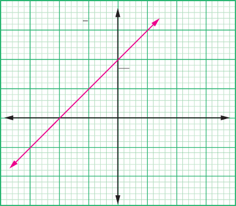
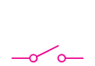

Figure 2.21: The graph of the reciprocal of current, against resistance,
The following activity 2.3 will aid on practical understanding in measurement of e.m.f and internal resistance.
 Activity 2.3
Activity 2.3
Procedure
-
1. Connect the circuit as shown in Figure 2.22.
E A R S
Figure 2.22
2. Set at 10 Ω, close switch S and read the ammeter and record current, .
3. Repeat step 2 for = 8 Ω, 6 Ω, 4 Ω and 2 Ω.
4. Using a spreadsheet or otherwise, record results as shown in Table 2.6.
Table 2.6
| Resistance, (Ω) | Current, (A) | |
|---|---|---|
| 10 | ||
| 8 | ||
| 6 | ||
| 4 | ||
| 2 |
Questions
(a) Use ICT software or otherwise to plot a graph of against .
(b) Determine the vertical intercept.
(c) What is the value of ?
(d) Determine the slope of the graph.
(e) What is the value of ?
Example 2.6
An electric cell with minimal voltage, , has a resistance of 3 Ω connected across it.
If the voltage falls to 0.6 , calculate the internal resistance of this cell.
Solution
Given: